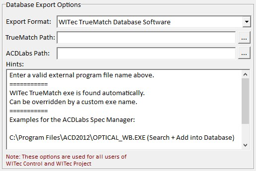

|
数据库导出选项
|
在数据库导出选项中，您可以定义应使用哪个数据库软件。
这些选项对计算机上 所有用户 共享，适用于WITec Control和WITec Project。

导出格式
这里您可以选择WITec TrueMatch数据库软件或ACDLabs。
TrueMatch路径
应留空。TrueMatch可执行文件将自动为 WITec TrueMatch数据库软件 找到。
ACDLabs路径
输入ACDLabs数据库软件的路径/可执行文件名。
文件名应类似
C:\Program Files\ACD2012\OPTICAL_WB.EXE（搜索+添加到数据库）
C:\Program Files\ACD2012\SPECPROC.EXE（仅在数据库中搜索）
C:\Program Files\ACD12\UVIRMAN.EXE（搜索+添加到数据库）